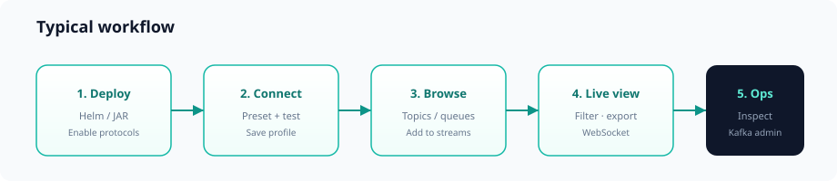

Getting started
From zero to your first live stream in about five minutes.

Prerequisites
- Java 21+ (for running the backend JAR locally)
- Node 18+ (for building the frontend)
- Network access to at least one messaging broker
- Optional: Docker and Helm 3 for container deployment
Quick start (local development)
1. Build and run the backend
cd backend
mvn -DskipTests package
java -jar eventore-server/target/eventore-server-0.1.0-SNAPSHOT.jarThe API listens on http://localhost:8080. Swagger UI: /swagger-ui.html.
2. Build and run the frontend
cd frontend
npm install
npm run devVite dev server proxies API calls to the backend (see vite.config.ts).
3. Verify control plane registration
curl -s http://localhost:8080/api/v1/control/plane | jq .activeProtocolsYou should see protocols matching the provider modules in your build (default: all eight).
4. Create your first connection
- Open the UI → Connections.
- Choose a stream platform preset (e.g. generic Kafka) or enter settings manually.
- Set broker URL (e.g.
localhost:9092for Kafka). - Add credentials if your cluster uses SASL/SSL.
- Click Save connection, then Test.
5. Browse and stream
- Go to Browse, select your connection, pick a topic or queue.
- Click Add to streams — the stream appears in the side panel.
- Open Live Stream to watch messages in real time.
Tip: Streams are stored in browser cookies. Closing the tab and returning restores your workspace.
Quick start (published images)
Pick stream providers in Helm; the chart pulls the matching GHCR backend tag (kafka, kafka-kinesis, etc.). Details: Published artifacts.
docker pull ghcr.io/vijayptiwari/eventore-backend:kafka
helm install eventore oci://ghcr.io/vijayptiwari/charts/eventore --version 0.1.0 \
-f deploy/helm/eventore/values-stream-kafka.yamlSlim deployment (Kafka + Kinesis only)
mvn -DskipTests -Pkafka-kinesis -P!providers-all -pl eventore-server -am package
java -jar eventore-server/target/eventore-server-0.1.0-SNAPSHOT.jar \
--spring.profiles.active=kafka-kinesisOnly Kafka and Kinesis appear in the UI protocol list. See Configuration.